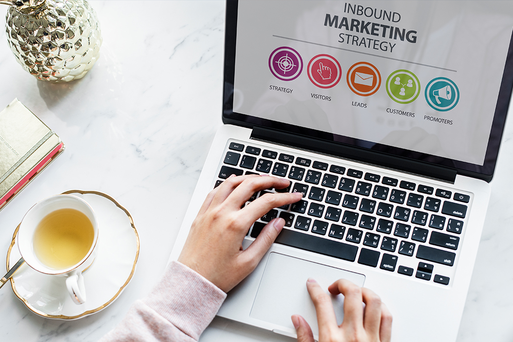

1. Τι είναι το Content Marketing;
Το Content Marketing είναι η τέχνη και η στρατηγική της δημιουργίας περιεχομένου που ενημερώνει, προσελκύει και κερδίζει την εμπιστοσύνη του κοινού σου χωρίς να του πουλάς άμεσα κάτι Αντί να επικεντρώνεσαι αποκλειστικά στη διαφήμιση των προϊόντων ή των υπηρεσιών σου, προσφέρεις αξία μέσα από γνώση, συμβουλές ή και ψυχαγωγία δημιουργώντας μια πιο ανθρώπινη σύνδεση με τον επισκέπτη
Όταν το περιεχόμενο σου είναι χρήσιμο και συνεπές, το κοινό σου αρχίζει να σε βλέπει σαν έμπιστο σύμβουλο και όχι απλώς σαν μία ακόμα επιχείρηση στο διαδίκτυο Έτσι αυξάνεις σταδιακά την επισκεψιμότητα, την αλληλεπίδραση και τις πιθανότητες μετατροπής ενός απλού αναγνώστη σε πελάτη
Τύποι περιεχομένου που μπορείς να αξιοποιήσεις:
- Άρθρα (blog posts): αναλυτικά ή σύντομα κείμενα που απαντούν σε ερωτήσεις ή λύνουν προβλήματα
- Οδηγοί & how-to: βήμα-βήμα διαδικασίες που βοηθούν τον χρήστη να πετύχει κάτι
- Infographics: οπτική παρουσίαση πληροφοριών που γίνεται εύκολα κατανοητή
- Βίντεο / Reels: σύντομα ή αναλυτικά βίντεο που εκπαιδεύουν ή ψυχαγωγούν
- Podcasts: ηχητικό περιεχόμενο που συντροφεύει το κοινό σου στην καθημερινότητά του
2. Πώς βρίσκουμε ιδέες για άρθρα (Keyword Research)
Κάθε επιτυχημένο άρθρο ξεκινά με μια καλή ιδέα – και κάθε καλή ιδέα ξεκινά από το τι αναζητά πραγματικά το κοινό σου Οι λέξεις-κλειδιά είναι το κλειδί για να βρεις αυτές τις ανάγκες και να δημιουργήσεις περιεχόμενο που όχι μόνο ενδιαφέρει αλλά και κατατάσσεται ψηλά στα αποτελέσματα αναζήτησης
Πώς βρίσκουμε αυτές τις λέξεις-κλειδιά;
- Google Search: Πληκτρολόγησε λέξεις σχετικές με το θέμα σου και δες τις αυτόματες προτάσεις ή τα \"Σχετικές αναζητήσεις\" στο κάτω μέρος της σελίδας
- AnswerThePublic: Σου δείχνει ερωτήσεις που κάνουν οι χρήστες γύρω από ένα keyword – εξαιρετικό για ιδέες how-to άρθρων
- Ubersuggest ή Semrush: Δίνουν αναλυτικά στατιστικά όπως όγκο αναζητήσεων, δυσκολία κατάταξης και προτάσεις keywords
Εστίασε σε long-tail keywords – δηλαδή πιο εξειδικευμένες φράσεις με 3+ λέξεις Για παράδειγμα, αντί για την γενική λέξη “blog”, προτίμησε φράσεις όπως:
- "πώς να ξεκινήσω blog το 2025"
- "δωρεάν πλατφόρμες για δημιουργία ιστολογίου"
- "βήματα για να γράψω το πρώτο μου άρθρο"
Οι long-tail λέξεις-κλειδιά έχουν μικρότερο ανταγωνισμό και μεγαλύτερη πιθανότητα να σου φέρουν στοχευμένη επισκεψιμότητα Αποτελούν τη βάση για SEO-friendly περιεχόμενο που δίνει ακριβώς αυτό που ζητάει ο επισκέπτης σου
.jpg)
3. Δημιουργία Στρατηγικής Περιεχομένου (Editorial Calendar)
Η συνέπεια είναι το παν για την επιτυχία στην ψηφιακή προώθηση. Ένα καλά οργανωμένο πρόγραμμα δημοσίευσης περιεχομένου (Editorial Calendar) θα σε βοηθήσει να παραμένεις συγκεντρωμένος, να βελτιώσεις την ορατότητα και να χτίσεις πιστό κοινό. Πάμε να δούμε τι πρέπει να περιλαμβάνει και πώς να το οργανώσεις σωστά:
- Ημερομηνία δημοσίευσης: Καθόρισε συγκεκριμένες ημερομηνίες για κάθε δημοσίευση. Αυτό βοηθά στην τήρηση της συνέπειας και δίνει χρόνο για σωστή προετοιμασία. Για παράδειγμα, κάθε Δευτέρα και Πέμπτη μπορείς να ανεβάζεις νέο άρθρο ή ανάρτηση.
- Τίτλος & λέξεις-κλειδιά: Ο τίτλος πρέπει να είναι ελκυστικός και να περιλαμβάνει τις βασικές λέξεις-κλειδιά που στοχεύεις. Αυτό βελτιώνει την SEO απόδοση και τραβάει το ενδιαφέρον του αναγνώστη. Π.χ. «Πώς να βελτιώσεις το SEO της ιστοσελίδας σου σε 5 βήματα» με λέξεις-κλειδιά: SEO, βελτίωση ιστοσελίδας.
- Στόχος άρθρου: Καθόρισε τι θέλεις να πετύχει το κάθε άρθρο: ενημέρωση, εκπαίδευση, αύξηση πωλήσεων ή δημιουργία engagement. Αυτό σε βοηθά να δομήσεις το περιεχόμενο και να μετρήσεις την επιτυχία του. Π.χ. Στόχος: Να ενημερώσω νέους επιχειρηματίες για τη σημασία του responsive design.
- Κανάλια προώθησης: Σκέψου πού θα προωθήσεις το περιεχόμενο: Facebook, Instagram, LinkedIn, email newsletter, blog. Κάθε κανάλι έχει διαφορετικό κοινό και μορφή περιεχομένου, γι’ αυτό σχεδίασε αντίστοιχη στρατηγική. Π.χ. για τεχνικά άρθρα καλύτερο το LinkedIn, ενώ για lifestyle θέματα το Instagram.
Extra Tips για Αποτελεσματικό Editorial Calendar:
- Χρησιμοποίησε εργαλεία όπως το Google Calendar, Trello ή Notion για να οργανώσεις εύκολα και ομαδικά το πρόγραμμα.
- Πρόβλεψε χρόνο για επανεξέταση και αναθεώρηση των άρθρων πριν τη δημοσίευση.
- Καθόρισε τακτικές ημερομηνίες αξιολόγησης των αποτελεσμάτων (analytics) για να βελτιώνεις συνεχώς τη στρατηγική σου.
4. Γράψε περιεχόμενο που βοηθάει
Μίλα απλά, σαν να εξηγείς σε φίλο. Η απλότητα και η φιλικότητα στο ύφος κάνουν το περιεχόμενο πιο προσιτό και κατανοητό.
Οργάνωσε το κείμενο με τέτοιο τρόπο που να είναι ευανάγνωστο και εύκολο στην παρακολούθηση:
- Χώρισε το κείμενο σε μικρές παραγράφους: Μεγάλες παράγραφοι κουράζουν και αποθαρρύνουν τον αναγνώστη.
- Χρησιμοποίησε λίστες: Οι λίστες βοηθούν να ξεκαθαρίσεις τα σημεία-κλειδιά και να διευκολύνεις την ανάγνωση.
- Πρόσθεσε εικόνες: Μια εικόνα ισοδυναμεί με χίλιες λέξεις – χρησιμοποίησε γραφήματα, screenshots ή φωτογραφίες που υποστηρίζουν το κείμενο.
- Χρησιμοποίησε έντονες λέξεις (bold): Τόνισε τις σημαντικές έννοιες ώστε να ξεχωρίζουν και να τραβούν την προσοχή.
Επιπλέον, πρόσεχε να αποφεύγεις τον πολύπλοκο τεχνικό λόγο και τα μακροσκελή κείμενα που κουράζουν τον αναγνώστη. Στόχος σου είναι να δώσεις απαντήσεις γρήγορα και κατανοητά.
5. Πώς φέρνεις κόσμο στο blog σου
Ακόμα και το καλύτερο περιεχόμενο, αν δεν προωθηθεί σωστά, μπορεί να μείνει απαρατήρητο. Η στρατηγική προώθησης είναι εξίσου σημαντική με τη δημιουργία του περιεχομένου. Δες πώς μπορείς να αυξήσεις την επισκεψιμότητα:
- Κοινή χρήση σε social media: Μοιράσου τα άρθρα σου σε Facebook, Instagram, LinkedIn, X (πρώην Twitter) και TikTok, ανάλογα με το κοινό σου. Μην ξεχνάς να προσθέτεις περιγραφές που τραβούν την προσοχή και εικόνες που ξεχωρίζουν στο feed.
- Newsletter: Δημιούργησε μια λίστα email και στείλε τακτικά ενημερώσεις με τα νέα άρθρα σου. Το email marketing είναι ένας σταθερός και αποτελεσματικός τρόπος για να κρατάς το κοινό σου ενεργό και ενημερωμένο.
- SEO στα σωστά σημεία: Βελτιστοποίησε τους τίτλους, τις περιγραφές (meta descriptions), τις επικεφαλίδες (H1, H2), τις εικόνες και τα internal links. Μην ξεχνάς τα keywords που έχεις επιλέξει και φρόντισε να τα εντάξεις φυσικά μέσα στο κείμενο.
- Guest blogging: Γράψε άρθρα για άλλα blogs στον τομέα σου ή φιλοξένησε άρθρα από άλλους. Έτσι χτίζεις backlinks, αυξάνεις την αξιοπιστία σου και φέρνεις νέο κοινό στο blog σου.
Extra Tip: Απάντησε σε σχόλια, αλληλεπίδρασε με άλλους δημιουργούς και μπες ενεργά στις online κοινότητες που σχετίζονται με το θέμα σου. Η παρουσία σου εκτός του blog είναι εξίσου σημαντική!
6. Μετρήσεις & Βελτιστοποίηση
Μην “ανεβάζεις και ξεχνάς”. Ένα blog χρειάζεται παρακολούθηση και συνεχή βελτίωση για να αποδίδει στο μέγιστο. Οι μετρήσεις σου δείχνουν τι δουλεύει και τι όχι, ώστε να πάρεις πιο έξυπνες αποφάσεις.
Τι να παρακολουθείς και πώς:
- Google Analytics: Μάθε ποια άρθρα φέρνουν τη μεγαλύτερη επισκεψιμότητα, πόσο χρόνο περνούν οι χρήστες σε κάθε σελίδα και από πού έρχονται. Έτσι μπορείς να ενισχύσεις τα άρθρα που λειτουργούν και να ανανεώσεις αυτά που δεν αποδίδουν.
- Google Search Console: Εντόπισε ποιες λέξεις-κλειδιά φέρνουν κλικ και εμφανίσεις στα αποτελέσματα αναζήτησης. Δες σε ποιες θέσεις εμφανίζεται το site σου και στόχευσε στην άνοδο με μικρές αλλαγές στον τίτλο ή στο περιεχόμενο.
- Hotjar ή Microsoft Clarity: Εργαλεία θερμικού χάρτη (heatmaps) που δείχνουν πού κάνουν scroll, πού κάνουν κλικ και πού "κολλάνε" οι επισκέπτες σου. Θα καταλάβεις αν το layout σου δουλεύει ή χρειάζεται αλλαγή.
Μην φοβάσαι να τροποποιήσεις άρθρα που έχουν ήδη δημοσιευθεί. Μια μικρή αλλαγή σε τίτλο, εισαγωγή ή εικόνα μπορεί να βελτιώσει σημαντικά την απόδοση ενός post.
Tip: Καθιέρωσε ένα μηνιαίο review: έλεγξε ποια άρθρα πήγαν καλά, ποια όχι και δημιούργησε νέο περιεχόμενο βασισμένο σε αυτά τα insights.
Συμπέρασμα: Το Content Marketing είναι μαραθώνιος. Κράτησε ρυθμό, πρόσφερε αξία και θα χτίσεις εμπιστοσύνη και επισκεψιμότητα.
Χρειάζεσαι βοήθεια; Επικοινώνησε μαζί μας στο site-mou.gr και θα χαρούμε να σε βοηθήσουμε!